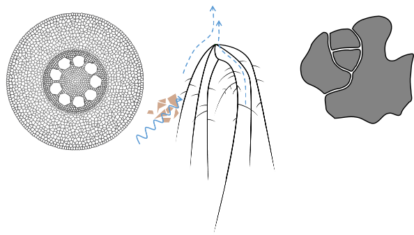
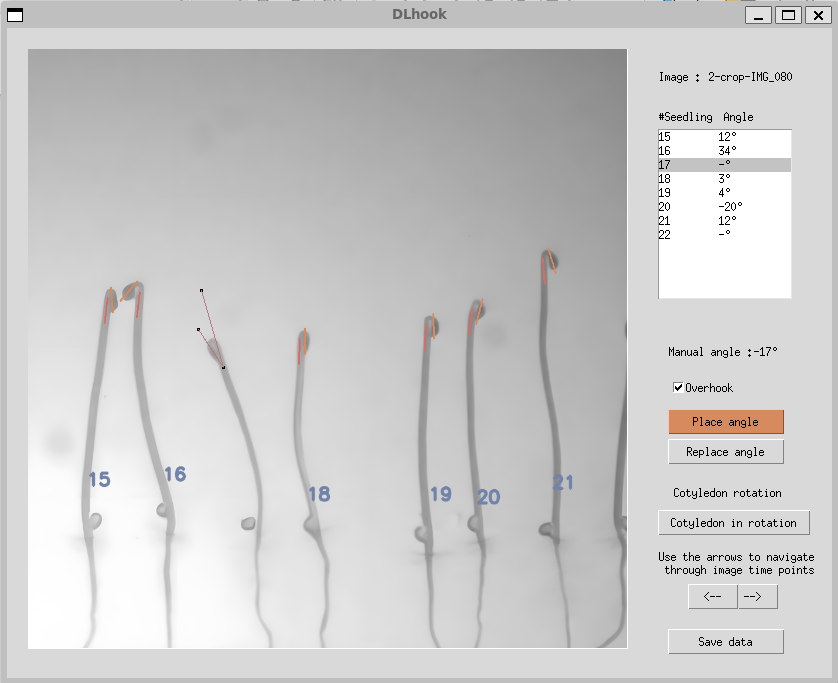
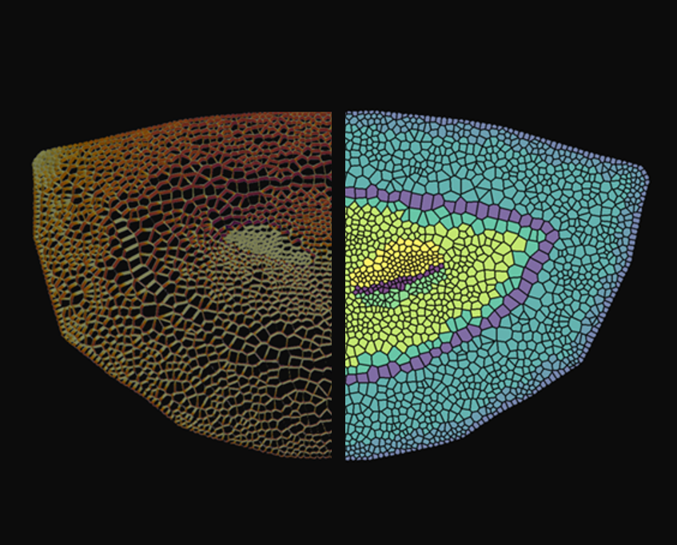
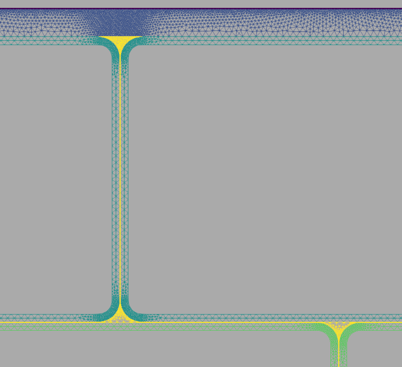
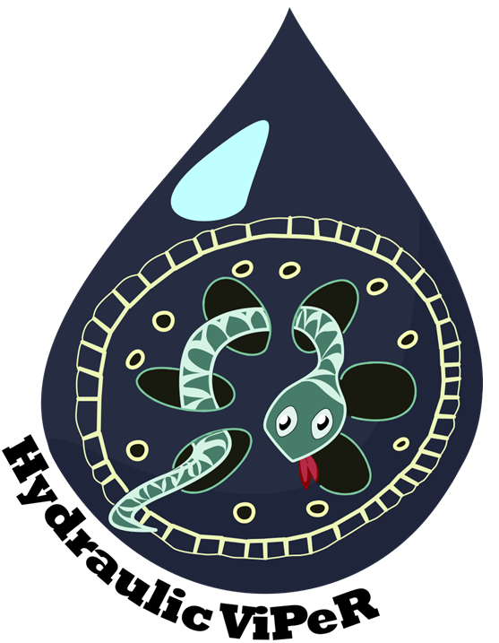
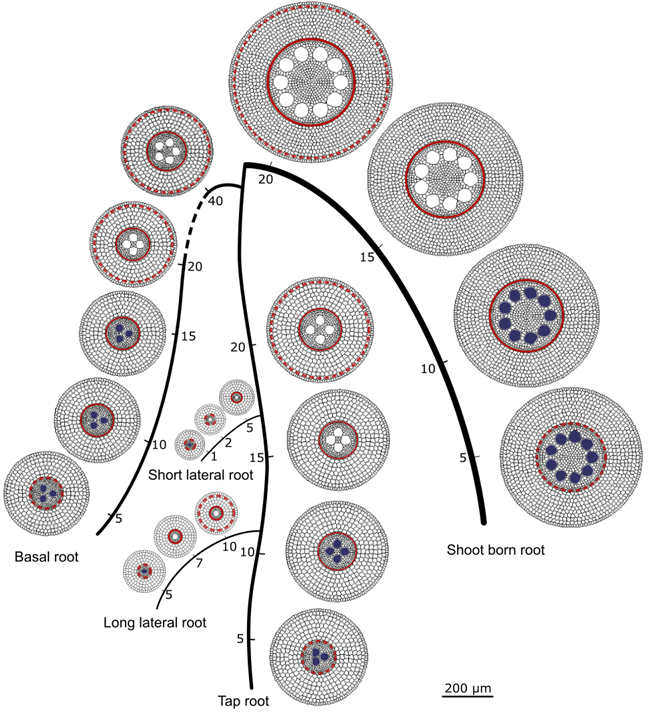
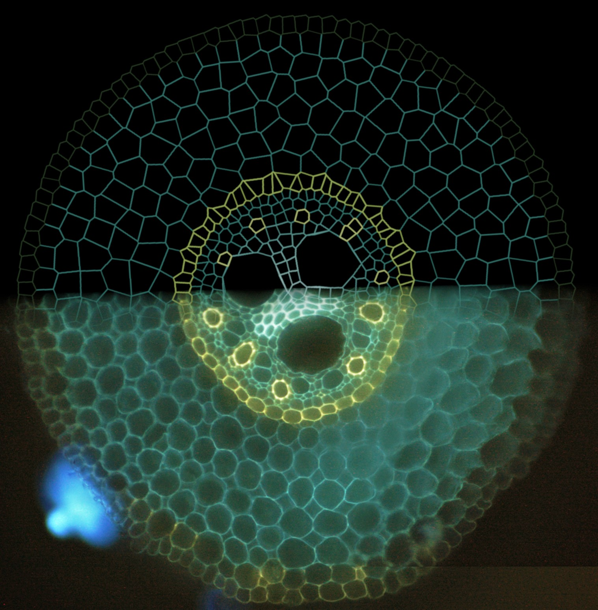

Hello,
I m a Postdoctoral researcher at ELI (UCLouvain - BE).
In October 2025, I secured a founding to start the HydroNeedle project (CR-FNRS) with Valentin Couvreur, where I'm investigating the interplay between hydraulics and biomechanics in pine needles. This work is carried out in collaboration with Stan Schymanski and Pierre Vollenweider through the Micro-C flux project. Our goal is to better understand how needle-scale hydraulic regulation impacts tissue biomechanics and overall water use strategies in conifers.
Before that, I was a postdoctoral fellow at the Umeå Plant Science Centre, working jointly with Stéphanie Robert and Stéphane Verger. My project focused on understanding the relationship between epidermal cells and their superstructures under various mechanical stress conditions, combining imaging, modeling, and quantitative analysis.
From 2018 to 2022, I completed my PhD at UCLouvain (Belgium), where I delved into the fascinating "in silico" realm of root hydraulic anatomy under Guillaume guidance. Following that, I carried out two short post-doc at UCLouvain, which led me to explore further the hidden half.
Anatomical functions are quite surprising and to unravel their mysteries I mostly use computational models. As a results, I hope that a better understanding at the anatomical level will improve the ways we grow plants.

Research
- Plant hydraulics
- Cell mechanics
2026
-
Plant hydraulics branch, latest work. HEAD → plant-hydraulics Ongoing
RootSAS — Root System & Anatomy Suite
Integrated pipeline for 2D root images: from root system architecture to cell anatomy and hydraulic modelling (root scans → Stelex / DigRED; cross-sections → Stari → GRANAP → MECHA conductivities).
Builds on: GRANAP · MECHA · RootPainter
-
Plant hydraulics branch. Under development
GRANAP
New version of GRANAR, rewritten in Python: generator of anatomies for all plant organs.
Builds on: GRANAR · HydroNeedle
GitHub repository -
Cell mechanics branch, latest work. cell-mechanics In development
DLhook
High-throughput apical hook phenotyping of dark-grown Arabidopsis thaliana seedlings.
GitHub repository
-
Cell mechanics branch. Preprint
Mechanical coordination of counter-gradient growth maintains organ curvature in the apical hook
Builds on: Bvpy
-
Plant hydraulics branch. Paper
Impact of root development, soil texture, and length of the root hair zone on root water uptake
-
Plant hydraulics branch. Paper
Secondary growth and exodermal barriers shape local root hydraulics: modelling insights in tomato
-
Cell mechanics branch. Paper
The primary beta-galactosidase BGAL10 modulates pavement cell shape acquisition in Arabidopsis
2025
-
Plant hydraulics branch. Merge: combines plant hydraulics and cell mechanics work. Merge Project
HydroNeedle
Modeling hydraulic functions of pine needle anatomy under well-watered and water deficit conditions, and how they interplay with needle biomechanics.
Builds on: Granar-Mecha · EpiMech
GitHub organization
-
Plant hydraulics branch. Paper
Node of origin matters: comparative analysis of soil water limitation effects on nodal root anatomy in maize (Zea mays)
-
Cell mechanics branch. Preprint
Regulation of vacuole fusion, a pivotal mechanism mitigating salt-induced inhibition of root cell growth
Builds on: Bvpy
-
Cell mechanics branch. Preprint Project
EpiMech — Outer epidermal edges mediate cell-cell adhesion for tissue integrity in plants
Builds on: Bvpy

2024
-
Plant hydraulics branch. Paper
Seedling root system adaptation to water availability during maize domestication and global expansion
-
Plant hydraulics branch. Paper
Evidence that variation in root anatomy contributes to local adaptation in Mexican native maize
-
Cell mechanics branch starts here (Umeå Plant Science Centre postdoc), branching off plant hydraulics. Branch Preprint
Rhamnogalacturonan-II dimerization deficiency impairs the coordination between growth and adhesion maintenance in plants
Builds on: RootPainter
2023
-
Plant hydraulics branch. Paper
Collaborative benchmarking of functional-structural root architecture models: quantitative comparison of simulated root water uptake
Builds on: R-SWMS
-
Plant hydraulics branch. Ongoing
HydraMaize
The influence of heterogeneous soil water potential on root growth: modeling root plastic response.
Builds on: R-SWMS
2022
-
Plant hydraulics branch. Milestone. PhD thesis
In silico analysis of the influence of root hydraulic anatomy on maize (Zea mays) water uptake
Includes Hydraulic VIPER, a virtual phenotyping pipeline for root hydraulic traits (with V. Couvreur, F. Meunier, M. Javaux, X. Draye, G. Lobet).
Builds on: GRANAR · MECHA · CRootBox · Hydrus · MARSHAL
VIPER poster VIPER slides
2021
-
Plant hydraulics branch. Preprint
Evidence for a multicellular symplasmic water pumping mechanism across vascular plant roots
Builds on: MECHA
-
Plant hydraulics branch. Paper Project
Hydraulic Maps — Combining cross-section images and modeling tools to create high-resolution root system hydraulic atlases in Zea mays

2020
-
Plant hydraulics branch. Paper Tool
GRANAR — A computational tool to better understand the functional importance of monocotyledon root anatomy
Try it online Website
-
Plant hydraulics branch. Service
SmartRoot to CRootBox
From root system scans to a 3D model of your plant in a few steps.
CRootBox 2019
-
Plant hydraulics branch starts here. Paper Tool
MARSHAL — A novel tool for virtual phenotyping of maize root system hydraulic architectures
Try it online Website
- Paper
- Preprint
- Project / tool
- Ongoing
- Milestone
- Merge
Useful tools
Plant models - Image analysis software tools - Image dataset
quantitative-plant.org . A website presenting image analysis software tools and models for plants
Doing Sciences with R
R for Data Science. This book will teach you how to do data science with R
Data to Viz. From Data to Viz leads you to the most appropriate graph for your data. It links to the code to build it and lists common caveats you should avoid.